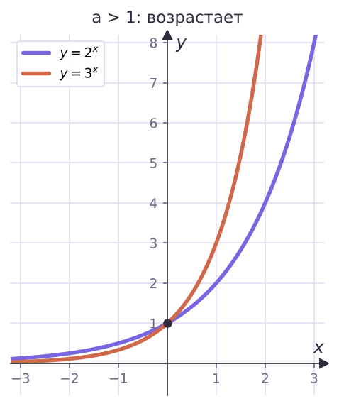
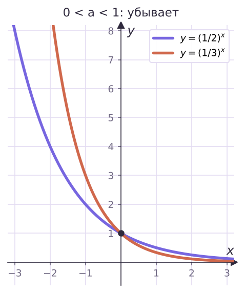
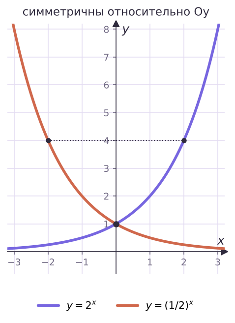

Теория
Одна бактерия делится пополам каждый час. Через час их 2, через два часа 4, через три — 8, через t часов — 2t. Здесь меняется показатель степени, а основание 2 постоянно. Сравни с y = x² из урока 6: там меняется основание, а показатель постоянный. Это две совсем разные функции, и сегодня — вторая.
Сначала вспомним свойства степени
В уроке 5 мы определили степень ax с любым действительным показателем при a > 0. Для a > 0, b > 0 и любых x, x1, x2:
- ax₁·ax₂ = ax₁ + x₂; ax₁ : ax₂ = ax₁ − x₂; (ax₁)x₂ = ax₁x₂;
- (ab)x = axbx; (a/b)x = ax/bx;
- ax > 0 — степень положительного числа всегда положительна;
- если a > 1 и x1 < x2, то ax₁ < ax₂; если 0 < a < 1 и x1 < x2, то ax₁ > ax₂.
Последние два свойства и дадут нам почти всё о новой функции.
Показательной функцией называется функция y = ax, где a — заданное число, a > 0, a ≠ 1.
Примеры: y = 2x, y = (1/3)x, y = 0,5x, y = πx, y = (√3)x. Название — потому что аргумент x стоит в показателе.
Почему такие ограничения на основание.
- a < 0 нельзя: (−4)1/2 = √(−4) не существует — функция была бы не определена при многих x.
- a = 0 нельзя: 00 и 0−1 не имеют смысла.
- a = 1 исключают: 1x = 1 при любом x — это просто постоянная, ничего «показательного» в ней нет.
Не путай y = x³ (степенная: переменная в основании) и y = 3x (показательная: переменная в показателе). При x = 2 они ещё близки (8 и 9), а при x = 10 — уже 1000 и 59 049.
Свойства показательной функции
- Область определения — все действительные числа ℝ. Почему: при a > 0 степень ax определена для любого x (урок 5).
- Множество значений — все положительные числа (0; +∞). Почему: ax > 0 всегда, поэтому ни ноль, ни отрицательные значения не получаются. А любое положительное число b значение принимает: уравнение ax = b при b > 0 имеет корень (это доказывают в высшей математике). Значит, любая прямая y = b, b > 0, пересекает график.
- При a > 1 функция возрастает на ℝ, при 0 < a < 1 — убывает на ℝ. Почему: это ровно последние свойства степени из списка выше.
Строим графики
| x | −3 | −2 | −1 | 0 | 1 | 2 | 3 |
|---|---|---|---|---|---|---|---|
| y = 2x | 1/8 | 1/4 | 1/2 | 1 | 2 | 4 | 8 |
| y = (1/2)x | 8 | 4 | 2 | 1 | 1/2 | 1/4 | 1/8 |


Что видно на графиках:
- все графики проходят через точку (0; 1), потому что a0 = 1 при любом a;
- график целиком лежит выше оси Ox — значения положительны;
- при a > 1 и x → −∞ график прижимается к оси Ox, но никогда её не касается. Такая прямая называется горизонтальной асимптотой. При x → +∞ график быстро уходит вверх;
- при 0 < a < 1 всё наоборот: к оси Ox график прижимается при x → +∞, а вверх уходит при x → −∞;
- чем больше основание (при a > 1), тем круче график справа от оси Oy: 3x растёт быстрее 2x.

Графики y = 2x и y = (1/2)x симметричны относительно оси Oy. Почему: (1/2)x = 2−x, то есть значение второй функции в точке x равно значению первой в точке −x. Например, 2² = 4 и (1/2)−2 = 4.
Ошибка: «2−3 = −8». Отрицательный показатель не делает число отрицательным: 2−3 = 1/2³ = 1/8 > 0. Показательная функция никогда не принимает отрицательных значений и не равна нулю.
Применяем свойства
Сравни числа: а) 31,4 и 3√2; б) 0,6−2 и 0,6−3.
а) Основание 3 > 1 — функция возрастает: больше показатель — больше значение. √2 ≈ 1,414 > 1,4, значит, 31,4 < 3√2.
б) Основание 0,6 < 1 — функция убывает: больше показатель — меньше значение. −2 > −3, значит, 0,6−2 < 0,6−3.
При основании от 0 до 1 знак сравнения «переворачивается». Сначала посмотри на основание — больше оно единицы или меньше, — и только потом сравнивай показатели.
Больше или меньше единицы число: а) 0,8−1,5; б) (7/5)−0,3?
Единица — это значение при показателе 0: 1 = a0.
а) 0,8 < 1, функция убывает, −1,5 < 0 ⇒ 0,8−1,5 > 0,80 = 1. Больше.
б) 7/5 > 1, функция возрастает, −0,3 < 0 ⇒ (7/5)−0,3 < 1. Меньше.
Реши уравнение 3x = 81.
81 = 3⁴, поэтому x = 4 — корень. Других корней нет: функция y = 3x возрастает, и при x > 4 значения больше 81, а при x < 4 — меньше. Каждое значение возрастающая функция принимает ровно один раз.
Ответ: x = 4.
Реши неравенство 2x > 8.
Прямая y = 8 пересекает график y = 2x в точке с абсциссой 3 (2³ = 8). Функция возрастает, поэтому график выше прямой справа от этой точки.
Ответ: x > 3.

Найди наибольшее и наименьшее значения y = (1/3)x на отрезке [−2; 1].
Функция убывает на всём отрезке, поэтому наибольшее значение — на левом конце, наименьшее — на правом. Поворотов внутри нет (в отличие от y = x⁴ в уроке 6).
y(−2) = (1/3)−2 = 9 — наибольшее; y(1) = 1/3 — наименьшее.
Период полураспада вещества 5 суток: за это время его масса уменьшается вдвое. Было 80 г. Сколько останется через 15 суток?
Масса через t суток: m = 80·(1/2)t/5. При t = 15: m = 80·(1/2)³ = 80/8 = 10 г.
Так же описываются давление воздуха в зависимости от высоты, остывание чая, рост вклада со сложными процентами.
Задачи урока
Реши в тетради. Ответы разберём на занятии.
Из учебника
- № 192, 194 — Построить график (эскиз) показательной функции.
- № 193 — Приближённые значения степеней по графику.
- № 195, 196 — Устно: сравнить числа; сравнить с единицей.
- № 197, 198 — Точка пересечения графиков; простейшие уравнения устно.
- № 199, 200 — Возрастает или убывает; неравенства графически.
- № 203, 204 — Наибольшее и наименьшее значения на отрезке.
- № 206 — Задача о радиоактивном распаде.
Тест к уроку
Домашнее задание
№ 192, 196, 197, 203 из учебника письменно; № 195 и 199 — устно. Построить в одной системе координат графики y = 3x и y = (1/3)x по таблице значений от −2 до 2 и подписать общую точку.